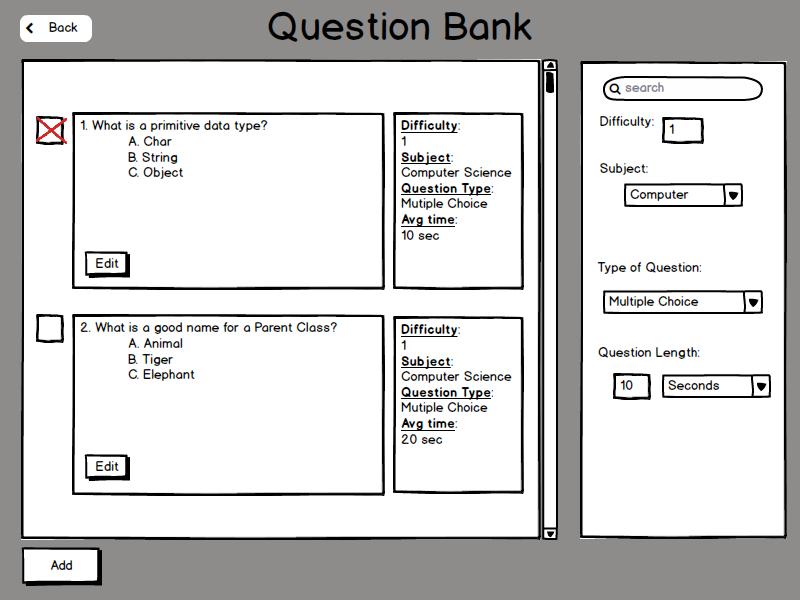
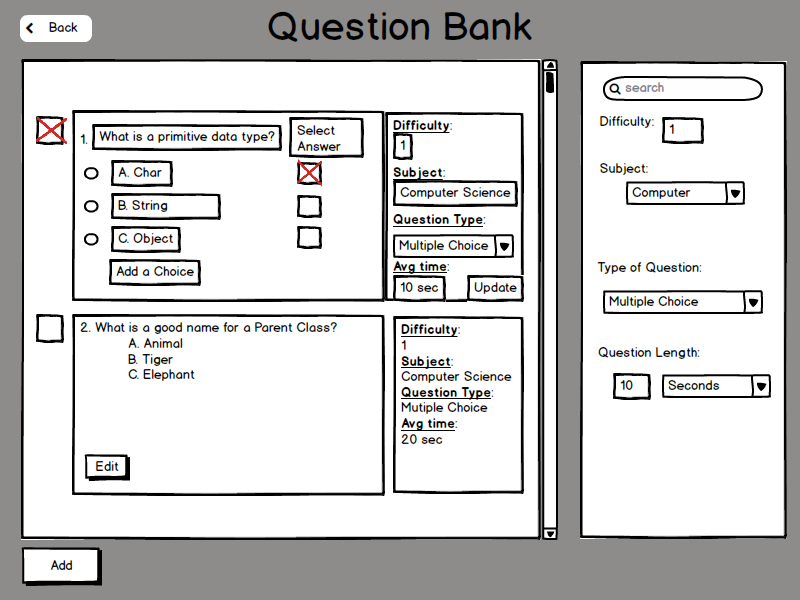

To Edit an Exisiting Question:
1. The user will go to the Question Bank and click on 'Edit' in one of the
question boxes

Figure 3-11
2. The text will change to text boxes which will let the user to change the question and the answers.
- The user can add a choice by clicking on 'Add a Choice' which will bring up another box to fill in.
- The user can delete fields by clicking on the circle shape next to the choices.
- The user can enter in the difficulty of the problem, use the dropdown to select the subject, change the type of question if the user does not want multiple choice, and update how long the question will take to answer.
- When the user is done editing, press Update to save all changes.

Figure 3-12